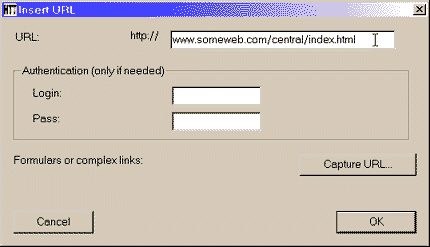
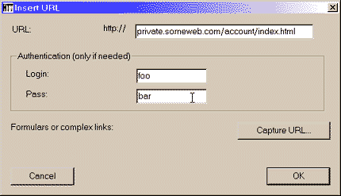
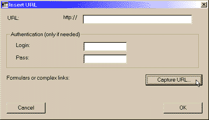
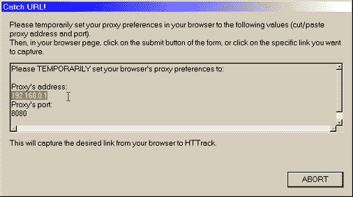
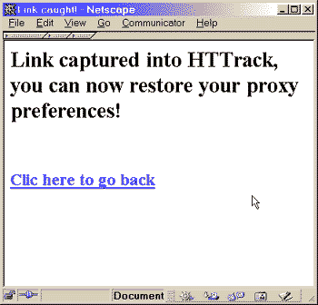

Add a URL
- Enter a typical Web address
- Enter a Web address with authentication
- Capture a link from your Web browser to HTTrack
Just type in your address in the field

OR
Useful when you need basic authentication to watch the Web page

OR
Use this tool only for form-based pages (pages delivered after submiting a form) that need some analysis

Set, as explained, your Web browser proxy preferences to the values indicated : set the proxy's address, and the proxy's port, then click on the button or link as you usually do in your Web browser.
The temporary proxy, installed by HTTrack, will then capture the link and display a confirmation page.


Back to Home